First some general points.
In this Error-Correction phase of the ECOLM project, we aim to produce encoded tablature systems that represent as exactly as possible the appearance of the original tablature, including all printing errors, musical errors and other unusual features.
That is, the task here is to correct errors in the optical tablature-recognition system (largely due to poor printing quality or photography, or damage to the original books) to achieve ‘diplomatic’ copies of the original print. For that reason, do not rely solely on the evidence of your ears when using MIDI playback - very frequently the prints contain ‘wrong notes’ that must be printing errors, as well as unexpected notes according to what we might think we understand of 16th-century music theory. These must not be altered at this stage, otherwise they will become confused with optical recognition errors.
A secondary, later, ECOLM editing phase will collate the corrected systems (each will be corrected by two online editors to ensure accuracy) and produce musically-coherent versions of complete pieces to be entered into the public ECOLM database with metadata giving titles, composers and other bibliographical and historical information. At that point the music will automatically become available for other processes, such as searching, comparison with vocal models, other forms of analysis, and printing.
Registration
As you needed to be registered on the ECOLM system to reach this point, we do not explain the registration process here. To reach the Registration window at any point, click on ‘Change password’ in the Editor window.
Every time you open a new ECOLM error-correction interface page, you will always be presented with a login page on which you must enter your registration details (username and password). See Help item ‘Login Screen’. Your username will always be displayed in the editor window.
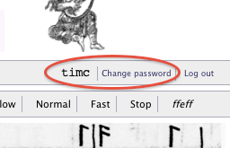
You can change your password at any time by clicking on ‘Change password’, which will take you to the Registration window.
Browser suitability
If you are using the same browser/computer setup you used when you registered to help us with ECOLM corrections, the system should have told you whether your web-browser is suitable and properly set up to use the online correction interface effectively. If not, try downloading and installing Firefox or Chrome.
Currently we are aware of problems with MIDI playback on Macs running OS X 10.6 (Lion):
MIDI appears not to work at all in Safari, while other browsers may or may not work depending on your computer’s precise system/browser combination.
While we hope that this problem is fixed in an early release of OS X 10.7 (Mountain Lion) we are not certain that this will happen, and we are taking active steps to get round the problem by using another method.
Login Screen
The ECOLM correctors’ login screen looks like this:
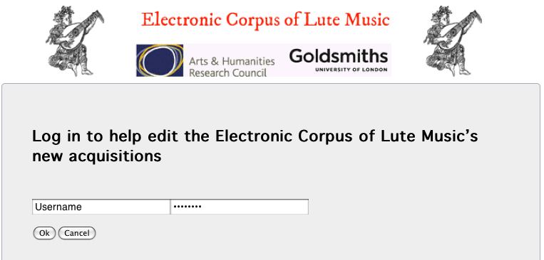
Enter your user name in the left-hand text box and your password (case-sensitive) in the right-hand one. Then click OK.
Editor window
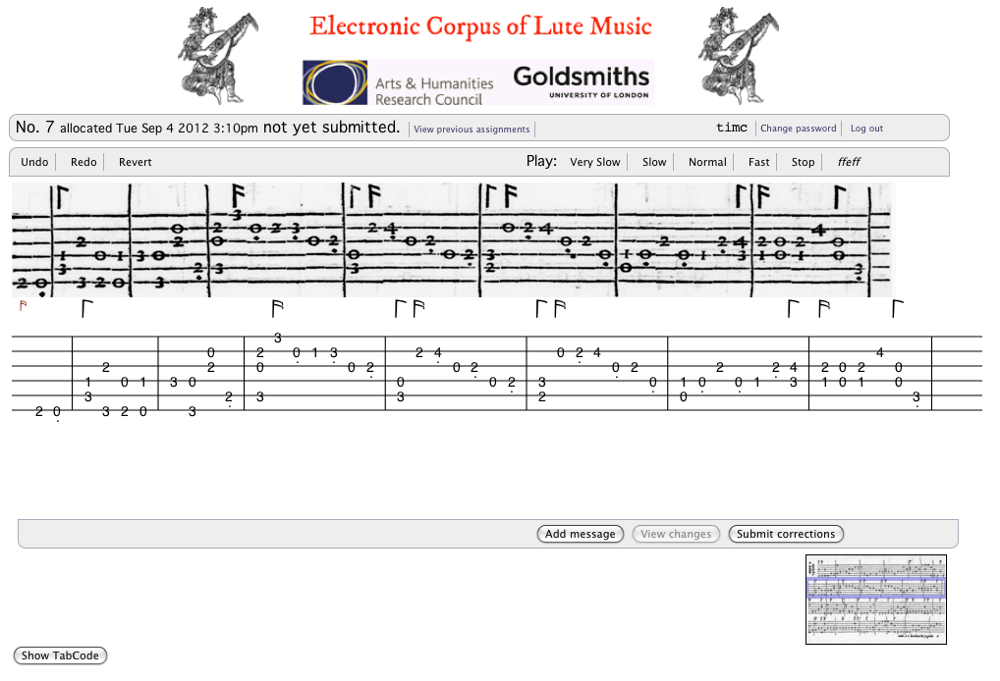[Describe screen layout]
Assignments
If all goes well, you will automatically be presented with a randomly-selected system of tablature to be corrected. The same thing will happen after you submit a system that you have corrected. See ‘Submitting Corrections, below.’)
An image of the system from the original source will be shown (roughly) in parallel with a rendering of the automatically-encoded, ‘raw’ (uncorrected) tablature:
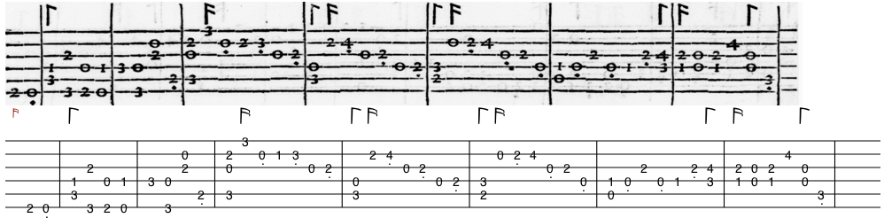
Reviewing your Assignments
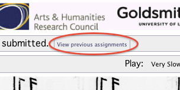
Click on ‘View previous assignments’ and use the navigation buttons which then appear to review all your assigned systems and their current correction-state.
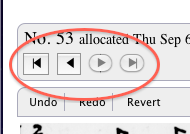
MIDI Playback
At any point (if your browser, operating system and computer combination allows) you can use the Playback buttons to hear the music at various speeds (‘Very Slow’, ‘Slow’, ‘Normal’ and ‘Fast’); the ‘Stop’ button instantly stops playback, which always resumes from the start of the system.
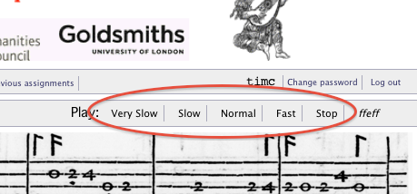
NB: If you are a Mac user having difficulty with MIDI playback, see the notice under the Help item ‘Is my browser suitable?’
Tuning
Several pieces in the ECOLM collection require a different interval tuning than the normal lute tuning of the upper six courses (G C F a d g). The most commonly encountered alteration is to lower the sixth course a tone (this tuning was described as discordata or Abzug in Italy and Germany respectively).
In tablature terms, this can be conveniently expressed as a change from ‘ffeff’ to ‘hfeff’, so we have provided a button which toggles between these tunings at the top right of the editing window.
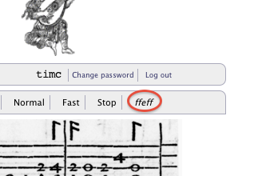
Garbage tablature
The optical tablature recognition system will try to recognise all text within the area designated as a stave or system of music as tablature (French or Italian depending on what it is directed to find). Frequently, this will include non-musical text-characters printed on or near the stave, such as piece-titles or similar rubrics, as in this example:

To help you to delete more than single tablature-symbols at one time, we shall introduce more comprehensive ‘Delete xxx’ buttons in the interface; for the time being, you can delete a complete ‘vertical stack’ of symbols (i.e. a ‘chord’) by clicking on ‘Delete Chord’. (The ‘Undo button’ should work as normal.)
In some early prints, where a new piece follows another within the same system, the new title is printed (on its side) in a gap in the staff-lines. In this case, the fact of the new piece should be recognised (if not, see ‘Piece breaks’), but the title will produce garbage tablature, which needs to be deleted as above.

Piece breaks
The ECOLM database of metadata, annotated manually and based on Brown’s bibliography of 16th-century printed instrumental music, tells us which system each piece begins on. However, it does not tell us if this new piece is preceded on the same system by the end of the previous piece. In several cases, the staff-lines on a system are interrupted by a gap containing a title for the new piece (thus creating garbage tablature, see: ‘Garbage Tablature’; here a piece-break needs to be added manually
You can manually insert a piece-break between tablature chords (displayed as a blue dotted double ‘barline’) to indicate the start of a new piece within a system; see ‘Inserting between chords’.
Editing the Tablature
As you move the mouse over the tablature (without clicking) the various symbols in the tablature will be highlighted.
In addition, as the mouse passes over
| an empty location within an existing chord where a symbol may be added, the insertion point will be highlighted with a red rounded rectangle | 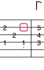 | |
| between chords, or immediately before the first chord, or immediately after the last, this becomes a small grey insertion rectangle | 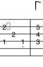 |
If the mouse is clicked in either of these locations, or on a highlighted symbol, a palette of buttons opens up, appropriate either to the symbols you can insert here, or to the actions you can then perform on the highlighted symbol (always including ‘Cancel’, which simply closes the palette without changing anything).
Any editing action, or sequence of actions, you perform may be reversed by clicking ‘Undo’ in the editor window. You can reverse the entire sequence of editing actions you have done on this system by clicking ‘Revert’, which returns the encoded tablature to its original, raw state, and you will have to re-enter any corrections you wish to preserve. (Use with care!)
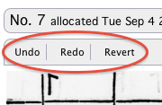
If the highlighted symbol is a rhythm flag, you can:
|
When the present system has no rhythm-sign above the first note or chord, the rhythm-sign currently in force from the previous system on that page or the previous one will automatically be displayed as a small flag slightly displaced to the left.
You can change this ‘initial rhythm-sign’ as you wish, for sensible playback, but its value will not be recorded in the ECOLM database. If the first rhythm-sign in the present system has been incorrectly recognised or missed altogether, you should correct it in the normal place, and the ‘initial rhythm-sign’ will disappear (as it is no longer needed). |
|

If the highlighted symbol is a barline, you can:
If the highlighted symbol is a tablature letter/number, you can:
| When the mouse pointer is over a suitable empty space within an existing ‘chord’, the insertion point will be highlighted with a red rounded rectangle: |
If you click the mouse here, you can add:
| When the mouse pointer is in the space between chords, the insertion point will be highlighted with a grey rounded rectangle: |
Automatic Updating and Saving of Corrections
If you are online when editing, your browser will connect with the ECOLM system via the broadband connection and automatically save all changes you make to the server. If the connection is broken, you can continue to edit, but if you don't close the window [SYSTEM? PAGE? BROWSER?] in the meantime, the changes will be saved when you reconnect. This updating procedure may take a second or two (depending on your internet connection and the network traffic), and is indicated by the green circle at the bottom right of your browser winder turning red; when it returns to green, your changes have been saved to the ECOLM database. [DOES THIS NEED MORE CLARIFICATION?]
Add Message
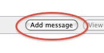
This allows you to attach a message to the system that has been allocated to you and that you are currently working on (whether you have done any corrections or not). You are offered a list of generic message-types which are helpful for the project team in analysing the issues surrounding tablature recognition, the correction interface, or the allocation of systems for correction. Without this feedback the team would have to make informed guesses about the nature of any difficulties you might encounter. Having selected a message-type (the first option "-- --" indicates a non-specific or unlisted type), type your message in the text box below. Please be as explicit and clear as you can about any problems you encounter. Clicking 'OK' will enter your message, attached to the allocated system, for later perusal by the project team.
NB Please do not try to use this message mechanism as a 'helpline', or for personal or time-sensitive messages. These messages will be plainly visible to the whole project team (though not, in general, to other correctors), and they are simply stored in the ECOLM database until they are reviewed by the project team; they are unlikely to be read soon after entry.
View changes [not yet working]
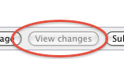
The tablature is displayed with your corrections highlighted in an intuitive way.
Submit Corrections
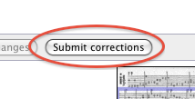
Click on this button only when you are sure that you have completed corrections on the allocated tablature system. (However, you can return to a previously-submitted system and edit it further. See 'Reviewing your Assignments', above.)
When you click this button, you will immediately be presented with a new, randomly-selected system for correction. Note that the allocation time of a system is dispolayed at the top of the editing area.
Page Thumbnail and Zoom Page
At the bottom right of the editing window a 'thumbnail' view of the original source-page is displayed, with the allocated system highlighted.
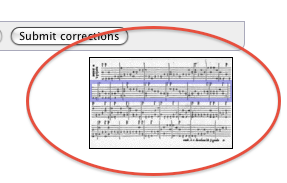If you move the mouse over the thumbnail, a greatly-enlarged image of the detail of the page under the mouse pointer is displayed on the left. Using this may give a better idea of the page-context for a system. [PLEASE LET US KNOW IF THIS IS HELPFUL]
Show/Hide TabCode
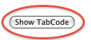
Shows and hides the code in which we save the tablature information. Only attempt to alter this if you know precisely what you are doing!